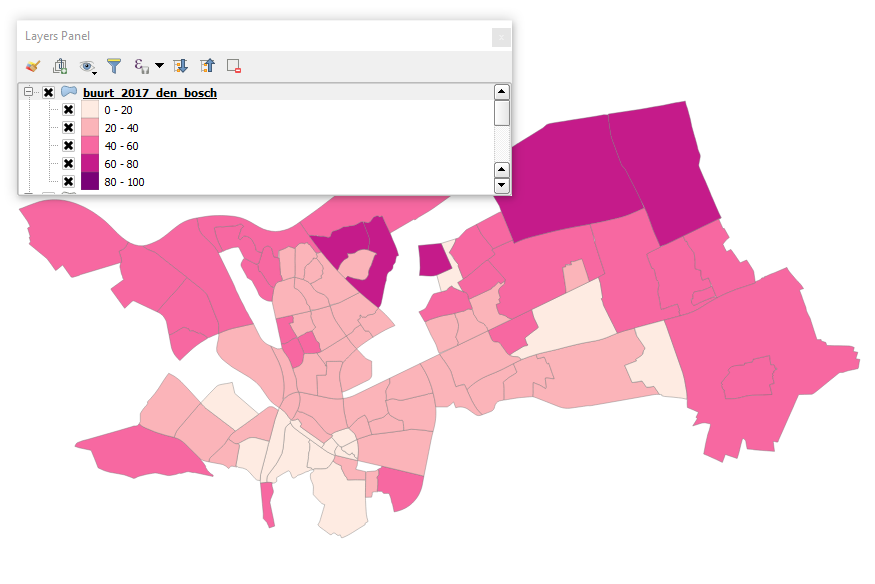

3. Create new layer in GeoPackage¶
In this exercise we are going to create a new layer based on a view with a filter. A view in a database can be thought of as a virtual table, only the definition of the view is stored in the database, for more information see the Wikipedia entry on database views.
For our new view we are only interested in neighborhoods (buurten) that are located in the municipality (gemeente) Den Bosch. To create this view execute the following SQL in the DB Browser for SQLite:
CREATE VIEW buurt_2017_den_bosch AS
SELECT *
FROM buurt_2017
where GM_NAAM='''s-Hertogenbosch';
To be able to use the view in the GeoPackage we need to register the view in the table gpkg_content, otherwise there is no way to know this table contains a dataset. Execute the following SQL query:
INSERT INTO gpkg_contents (table_name, data_type, identifier, description, last_change, min_x, min_y, max_x, max_y, srs_id)
VALUES ('buurt_2017_den_bosch', 'features', 'buurt_2017_den_bosch', '', '2017-11-21 09:51:00', 10425.1560058594 ,10425.1560058594 ,10425.1560058594 ,10425.1560058594 , 28992);
Next register in the table gpkg_geometry_columns what column in the table buurt_2017_den_bosch contains the geometry:
INSERT INTO gpkg_geometry_columns (table_name, column_name, geometry_type_name, srs_id, z, m)
VALUES ('buurt_2017_den_bosch', 'geom', 'MULTIPOLYGON', 28992, 0 ,0);
Next we can create a new style in a different color scheme, I used the style we created in :ref:`create-new-sld`, changed the name and the title and updated the colors, download it `here <https://drive.geocat.net/public.php?service=files&t=0c70ecac76bff9d33b5325a24e57f188&download>`_.
Create a new style record in the table owc_style with the name buurt_2017_den_bosch.
Next update the OWS-context file in the owc_contex table, the OWS-context file is located in the content column. Here you can add a new entry instead of replacing it since the table does exist in the GeoPackage:
<entry>
<id>http://www.geocat.net/maps//layers/buurt_2017_den_bosch</id>
<title>buurt_2017_den_bosch</title>
<updated>2017-11-21T19:14:21</updated>
<category scheme="http://www.opengis.net/spec/owc/active" term="true"/>
<owc:offering code="http://www.opengis.net/spec/owc-atom/1.0/req/gpkg">
<owc:content href="#table=buurt_2017_den_bosch" type="application/x-sqlite"/>
<owc:styleSet>
<owc:name>buurt_2017_den_bosch</owc:name>
<owc:title>buurt_2017_den_bosch</owc:title>
<owc:content href="#table=owc_style&name=buurt_2017_den_bosch" type="application/sld+xml"/>
</owc:styleSet>
</owc:offering>
</entry>
See the resulting file here.
Do not forget to apply the changes for each field, and write the changes to the database before exiting DB Browser for SQLite.
Open up the GeoPackage in QGIS:
{kind=link}